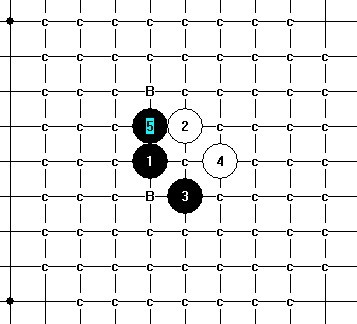

J8-H9 这个蒲月点怎么下比较好
#1 J8-H9 这个蒲月点怎么下比较好 作者：安娜制作所 发表时间：2010-11-1 8:34:24
#2 Re:J8-H9 这个蒲月点怎么下比较好 作者：米 发表时间：2010-11-1 12:25:27
=======上图对应的爱五子棋谱代码如下，以便你拆解：========
h8i9i7j8h9h10k7g9f8g8g7h6j6g11f12g10g12i10j10i12i11e10f10f9h7j7e8i5d11
======================================================
这个黑5必胜，基本上照抄水月，但偶尔要注意边界，例如图中这手和水月的走法不同。
#3 Re:J8-H9 这个蒲月点怎么下比较好 作者：安娜制作所 发表时间：2010-11-1 16:21:53
谢谢米老师提示!#4 Re:J8-H9 这个蒲月点怎么下比较好 作者：gerbo 发表时间：2010-11-1 16:55:38
膜拜~~~#5 Re:J8-H9 这个蒲月点怎么下比较好 作者：屏蔽 发表时间：2010-11-1 18:53:33
其实水月的这个局面我也是用2楼的29解决的……#6 Re:Re:J8-H9 这个蒲月点怎么下比较好 作者：米 发表时间：2010-11-2 8:08:28
=======上图对应的爱五子棋谱代码如下，以便你拆解：========
h8i9i7j8h9h10k7g9f8g8g7h6j6g11f12g10g12i10j10i11i12j12k13f11h11h7e10
======================================================
楼上说水月和我二楼的29用一样的也可以杀，这话是完全正确的，但由于边界关系，如果水月用了同样的29，后面的走法还是要改变，形成杀的地点也不同。另外，如图是另外一个和水月因边界关系用不同杀法的局面，最后这手和水月不同。